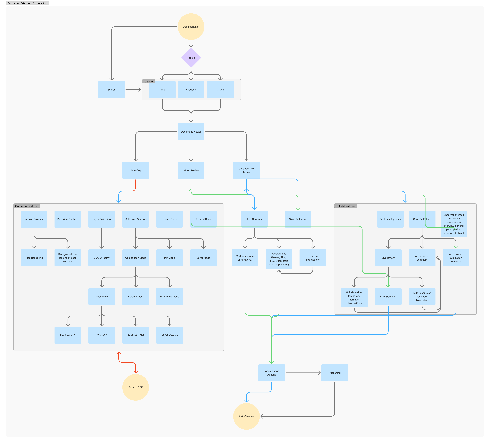

Document Viewer

Intro
Designed a unified Document Viewer to support large-scale construction workflows across drawings, models, and reality capture.
The goal was to move from fragmented tools to a single, context-aware workspace where users could review, compare, and collaborate without leaving the document.
This work sits at the intersection of document management, BIM, and workflow systems, where scale, coordination, and clarity are critical to project success.

Problem
Enterprise users were managing reviews across multiple disconnected tools, leading to constant context switching and reduced visibility.
Reviewing a document wasn’t a single task—it involved navigating between viewers, workflows, comments, and external coordination tools.

- Review workflows were split across viewer, issues, and workflow modules
- No clear distinction between viewing vs acting, increasing error rates
- Collaboration lacked context
- Comparing documents required manual navigation

System Thinking
The solution required a system-level restructuring of how documents, workflows, and collaboration layers interact.
Instead of treating these as separate modules, the viewer became the central interaction surface.
- Documents act as the anchor for all actions
- Workflows and collaboration are embedded
- Users move across 2D, 3D, and reality seamlessly
- Designed for scale across large datasets and stakeholders
Key Decisions
Several structural decisions shaped the experience, balancing usability, scale, and system constraints.

Interaction Modes → separated viewing vs editing → reduced errors
Contextual Panels → preserved document context → reduced navigation
Unified Viewer → eliminated tool switching → increased system complexity
In-context Collaboration → improved visibility → required structured permissions
Solution
A multi-dimensional viewer combining navigation, review, and collaboration into a single workspace.
Users move between viewing, comparing, and acting without losing context.

- Layered viewing across document types
- Integrated comparison and navigation
- Context-aware tools
- Embedded workflows and communication

Impact
Simplified complex workflows and improved clarity across large-scale document ecosystems.
- Reduced context switching
- Faster review cycles
- Improved collaboration visibility
- Foundation for AI and automation